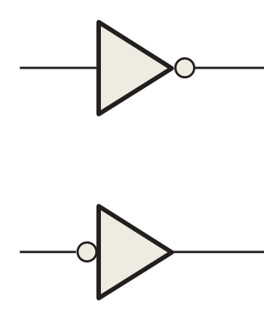
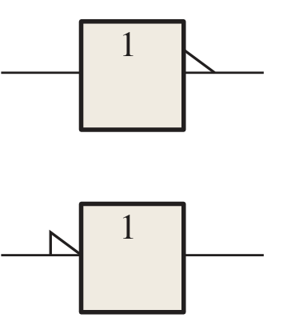
| อินพุต A | เอาต์พุต X |
|---|---|
| 0 (LOW) | 1 (HIGH) |
| 1 (HIGH) | 0 (LOW) |
X = A (อ่าน “เอบาร์” / “น็อตเอ”)
ผังเวลา (timing diagram) = กราฟรูปคลื่นตั้งแต่ 2 รูปขึ้นไปบนแกนเวลาเดียวกัน
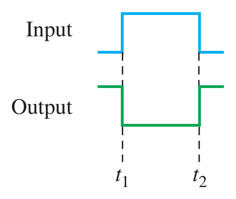
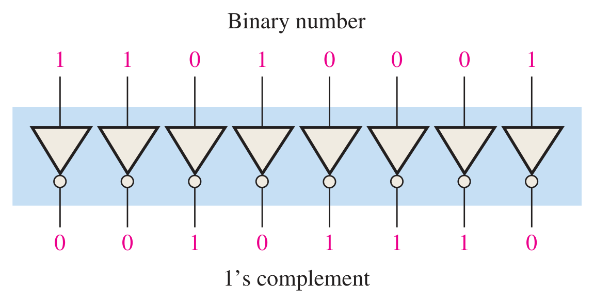
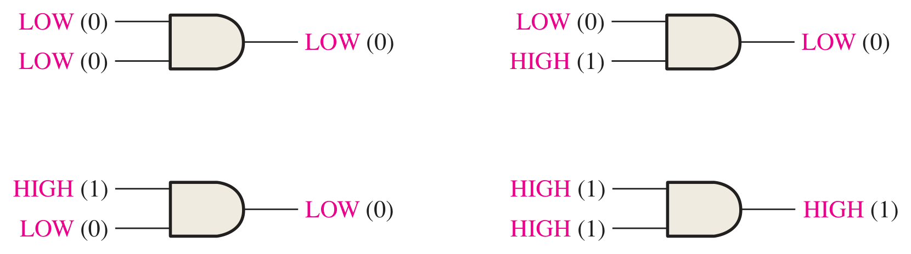
เป็น 1 เฉพาะเมื่ออินพุตทุกขาเป็น 1 · X = A·B = AB
| A | B | X |
|---|---|---|
| 0 | 0 | 0 |
| 0 | 1 | 0 |
| 1 | 0 | 0 |
| 1 | 1 | 1 |
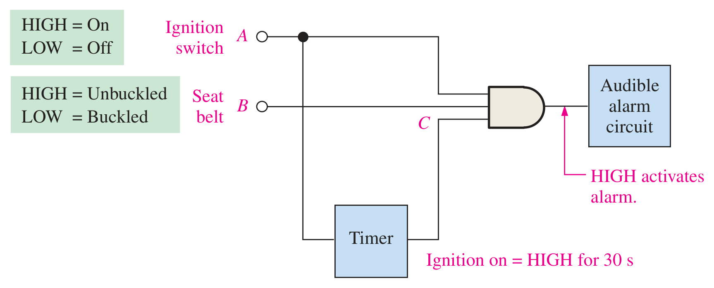
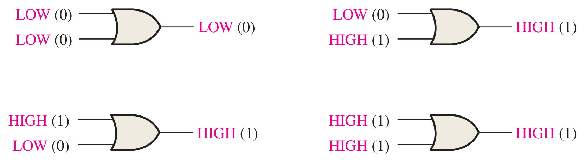
เป็น 0 เฉพาะเมื่ออินพุตทุกขาเป็น 0 · X = A + B
| A | B | X |
|---|---|---|
| 0 | 0 | 0 |
| 0 | 1 | 1 |
| 1 | 0 | 1 |
| 1 | 1 | 1 |
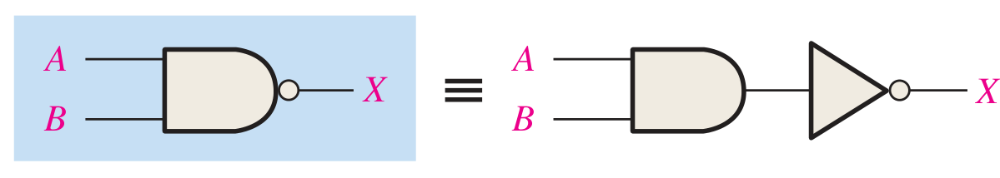
NAND = NOT ของ AND · X = AB
เป็น 0 เฉพาะเมื่อทุกอินพุตเป็น 1
| A | B | X |
|---|---|---|
| 0 | 0 | 1 |
| 0 | 1 | 1 |
| 1 | 0 | 1 |
| 1 | 1 | 0 |
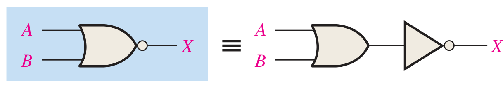
NOR = NOT ของ OR · X = A + B
เป็น 1 เฉพาะเมื่อทุกอินพุตเป็น 0
| A | B | X |
|---|---|---|
| 0 | 0 | 1 |
| 0 | 1 | 0 |
| 1 | 0 | 0 |
| 1 | 1 | 0 |
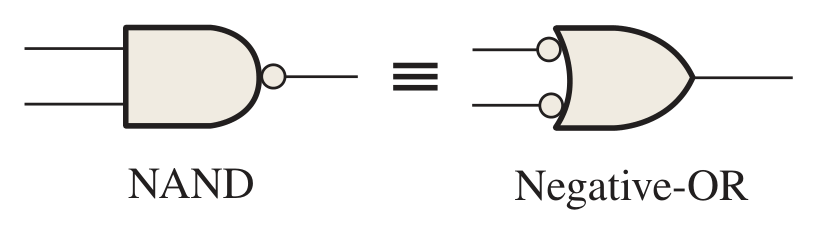
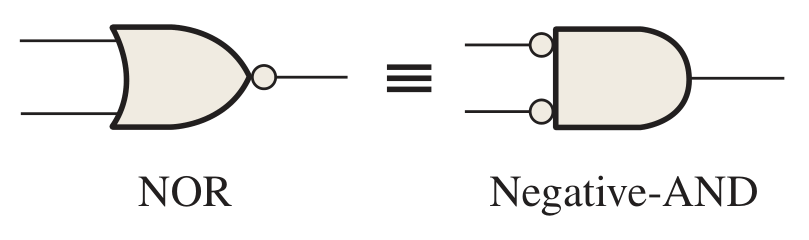
AB = A + B — OR ที่มีอินพุต active-LOW
A + B = A·B — AND ที่มีอินพุต active-LOW
ตารางค่าความจริงเท่ากันทุกแถว (ตารางที่ 3.5, 3.7) → ทฤษฎีบทของ DeMorgan ในบทที่ 4
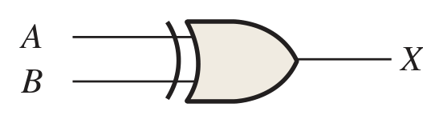
XOR — 1 เมื่ออินพุตต่างกัน · X = A ⊕ B
| A | B | X |
|---|---|---|
| 0 | 0 | 0 |
| 0 | 1 | 1 |
| 1 | 0 | 1 |
| 1 | 1 | 0 |
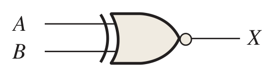
XNOR — 1 เมื่ออินพุตเหมือนกัน · X = A ⊕ B
| A | B | X |
|---|---|---|
| 0 | 0 | 1 |
| 0 | 1 | 0 |
| 1 | 0 | 0 |
| 1 | 1 | 1 |
ประยุกต์ (รูปที่ 3.39): XOR = ผลบวกของ 2 บิต (ไม่คิดตัวทด) → หัวใจของวงจรบวกในบทที่ 7
| เกท | สมการ | X = 1 เมื่อ | A,B = 00 | 01 | 10 | 11 | ไอซี |
|---|---|---|---|---|---|---|---|
| NOT | A | A = 0 | A=0 → 1 · A=1 → 0 | 7404 | |||
| AND | AB | ทุกอินพุตเป็น 1 | 0 | 0 | 0 | 1 | 7408 |
| OR | A + B | มีอินพุตใดเป็น 1 | 0 | 1 | 1 | 1 | 7432 |
| NAND | AB | มีอินพุตใดเป็น 0 | 1 | 1 | 1 | 0 | 7400 |
| NOR | A + B | ทุกอินพุตเป็น 0 | 1 | 0 | 0 | 0 | 7402 |
| XOR | A ⊕ B | อินพุตต่างกัน | 0 | 1 | 1 | 0 | 7486 |
| XNOR | A ⊕ B | อินพุตเหมือนกัน | 1 | 0 | 0 | 1 | — |
จาก 0/1 สู่แรงดัน กระแส เวลา และกำลังไฟฟ้าจริง · CLO9
| ฟังก์ชัน | เกท | ฟังก์ชัน | เกท |
|---|---|---|---|
| 00 | NAND 2 × 4 | 14 | Schmitt NOT × 6 |
| 02 | NOR 2 × 4 | 20 | NAND 4 × 2 |
| 04 | NOT × 6 | 27 | NOR 3 × 3 |
| 08 | AND 2 × 4 | 32 | OR 2 × 4 |
| 10 | NAND 3 × 3 | 86 | XOR 2 × 4 |
ตระกูลที่พบบ่อย: 74LS (TTL) · 74HC · 74HCT (อินพุตระดับ TTL) · 74LVC (≤ 3.3 V)
| ตระกูล | VCC | VIH | VIL | VOH | VOL |
|---|---|---|---|---|---|
| 74LS | 5 | 2.0 | 0.8 | 2.7 | 0.5 |
| 74HC | 5 | 3.5 | 1.5 | 4.4 | 0.33 |
| 74HCT | 5 | 2.0 | 0.8 | 4.4 | 0.33 |
| 74LVC | 3.3 | 2.0 | 0.8 | 2.4 | 0.4 |
ต้องเป็นบวกทั้งคู่ จึงต่อกันได้ · ความทนทานต่อสัญญาณรบกวน = ค่าที่น้อยกว่า
fan-out = min (ปัดลง)
CMOS: อินพุต ~1 µA → fan-out หลายพัน แต่ถูกจำกัดด้วยความจุอินพุต 3–10 pF
tPHL, tPLH วัดที่จุด 50% ของขอบสัญญาณ · tp = (tPLH + tPHL)/2
74LS00: 9 ns, 10 ns → tp ≈ 9.5 ns · เวลาหน่วงสะสมทุกชั้น
TTL ≈ 2 mW/เกท (คงที่) · CMOS PD = (CPD + CL) VCC² f
รายละเอียดอยู่ท้ายหน้าเนื้อหาบทที่ 3 · ⚠️ ตรวจขา 14 = VCC, 7 = GND และ 0.1 µF ก่อนจ่ายไฟ
กฎและหลักเกณฑ์ · ทฤษฎีบทของ DeMorgan · การวิเคราะห์วงจรด้วยพีชคณิตบูลีน CLO2 CLO4